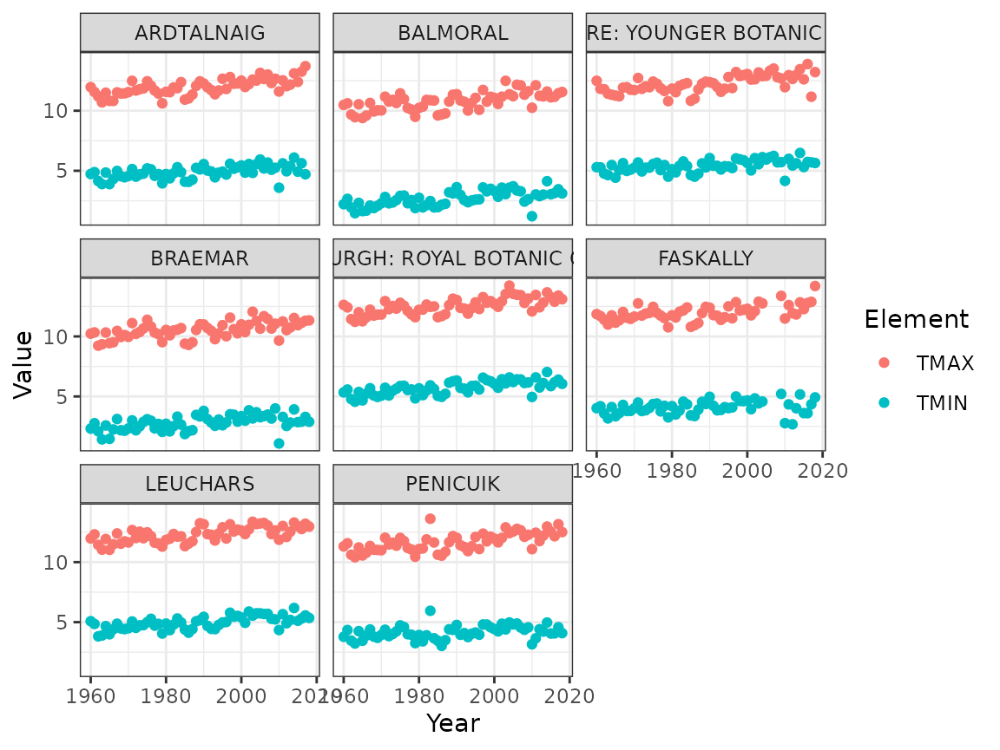
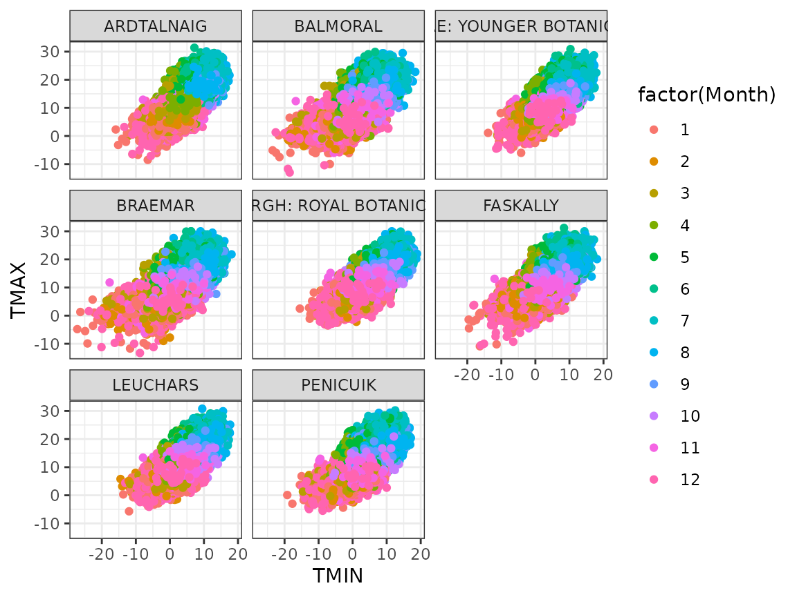

Tutorial 07: Data wrangling and cross validation (solutions)
Finn Lindgren
Source:vignettes/Tutorial07Solutions.Rmd
Tutorial07Solutions.RmdIntroduction
In this lab session you will explore
- Data wrangling; restructuring data frames
- Graphical data exploration
- Cross validation
- Open your github repository clone project from Lab 2 or 4
- During this lab, you can work in a
.Rfile, but working with code chunks in a.Rmdis recommended. - Make sure you update the
StatCompLabpackage to version 21.7.0 or higher.
Throughout this tutorial, you’ll make use of the data wrangling and plotting tools in the dplyr, magrittr, ggplot2 and other tidyverse packages, so start your code with library(tidyverse) and library(StatCompLab).
Note that the exercises in this tutorial build on each other, often with one solution being similar to previous solutions, with just a few additions and/or modifications.
Some of the data wrangling functions used in the tutorial are
-
mutateto add or alter variables -
filterto keep only rows fulfilling given criteria -
group_byto perform analyses within subgroups defined by one or more variables -
summariseto compute data summaries, usually with subgroups -
selectto keep only some variables -
left_jointo join two data frames together, based on common identifier variables -
pivot_widerto split a value variable into new named variables based on a category variable -
pivot_longerto gather several variables into a new single value variable, and the names stored in a new category variable -
%>%, the “pipe” operator used to glue a sequence of operations together by feeding the result of an operation into the first argument of the following function call -
headto view only the first few rows of a data frame. This can be useful when debugging a sequence of “piped” expressions, by placing it last in the pipe sequence -
pullto extract the contents of a single variable
Functions for plotting,
-
ggplotfor initialising plots -
geom_pointfor drawing points -
facet_wrapfor splitting a plot into “facet” plots, based on one or more category variables
Scottish weather data
The Global Historical Climatology Network at https://www.ncei.noaa.gov/products/land-based-station/global-historical-climatology-network-daily provides historical weather data collected from all over the globe. A subset of the daily resolution data set is available in the StatCompLab package containing data from eight weather stations in Scotland, covering the time period from 1 January 1960 to 31 December 2018. Some of the measurements are missing, either due to instrument problems or data collection issues. Load the data with
The ghcnd_stations data frame has 5 variables:
-
ID: The identifier code for each station -
Name: The humanly readable station name -
Latitude: The latitude of the station location, in degrees -
Longitude: The longitude of the station location, in degrees -
Elevation: The station elevation, in metres above sea level
The station data set is small enough that you can view the whole thing, e.g. with knitr::kable(ghcnd_stations). You can try to find some of the locations on a map (google maps an other online map systems can usually interpret latitude and longitude searches).
Solution:
knitr::kable(ghcnd_stations)| ID | Name | Latitude | Longitude | Elevation |
|---|---|---|---|---|
| UKE00105874 | BRAEMAR | 57.0058 | -3.3967 | 339 |
| UKE00105875 | BALMORAL | 57.0367 | -3.2200 | 283 |
| UKE00105884 | ARDTALNAIG | 56.5289 | -4.1108 | 130 |
| UKE00105885 | FASKALLY | 56.7181 | -3.7689 | 94 |
| UKE00105886 | LEUCHARS | 56.3767 | -2.8617 | 10 |
| UKE00105887 | PENICUIK | 55.8239 | -3.2258 | 185 |
| UKE00105888 | EDINBURGH: ROYAL BOTANIC GARDE | 55.9667 | -3.2100 | 26 |
| UKE00105930 | BENMORE: YOUNGER BOTANIC GARDE | 56.0281 | -4.9858 | 12 |
The ghcnd_values data frame has 7 variables:
-
ID: The station identifier code for each observation -
Year: The year the value was measured -
Month: The month the value was measured -
Day: The day of the month the value was measured -
DecYear: “Decimal year”, the measurement date converted to a fractional value, where whole numbers correspond to 1 January, and fractional values correspond to later dates within the year. This is useful for both plotting and modelling. -
Element: One of “TMIN” (minimum temperature), “TMAX” (maximum temperature), or “PRCP” (precipitation), indicating what each value in theValuevariable represents -
Value: Daily measured temperature (in degrees Celsius) or precipitation (in mm)
The values data object has 502901 rows, so we don’t want to try to view the whole object directly. Instead, we can start by summarising it.
Start by counting how many observations each station has, for each type of measurement. The shortest approach is to use the count() function. A more generalisable approach is to use the group_by(), summarise(), and n() functions. See the description on ?count for how count() is connected to the others. To avoid having to create temporary named variables, end the pipe operations with a call to knitr::kable(), especially if you’re working in an RMarkdown document.
Solution:
| ID | Element | n |
|---|---|---|
| UKE00105874 | PRCP | 20301 |
| UKE00105874 | TMAX | 21399 |
| UKE00105874 | TMIN | 21277 |
| UKE00105875 | PRCP | 20668 |
| UKE00105875 | TMAX | 21514 |
| UKE00105875 | TMIN | 21523 |
| UKE00105884 | PRCP | 20575 |
| UKE00105884 | TMAX | 20861 |
| UKE00105884 | TMIN | 20856 |
| UKE00105885 | PRCP | 19449 |
| UKE00105885 | TMAX | 19451 |
| UKE00105885 | TMIN | 19547 |
| UKE00105886 | PRCP | 21550 |
| UKE00105886 | TMAX | 21548 |
| UKE00105886 | TMIN | 21548 |
| UKE00105887 | PRCP | 20684 |
| UKE00105887 | TMAX | 21087 |
| UKE00105887 | TMIN | 21130 |
| UKE00105888 | PRCP | 21184 |
| UKE00105888 | TMAX | 21483 |
| UKE00105888 | TMIN | 21540 |
| UKE00105930 | PRCP | 21184 |
| UKE00105930 | TMAX | 21015 |
| UKE00105930 | TMIN | 21527 |
Exploratory plotting
Before, we only looked at the station data and weather measurements separately. When plotting, we would at least like to have access to the station names instead of the identifying codes, to give a more humanly readable presentation.
This can be accomplished with the left_join() function, that can add copies of the rows from one data frame to another, where one or more columns match. Create a new variable, ghcnd that for each observation contains both the measurements and the station data:
## # A tibble: 6 × 11
## ID Year Month Day DecYear Element Value Name Latitude Longitude
## <chr> <int> <int> <int> <dbl> <chr> <dbl> <chr> <dbl> <dbl>
## 1 UKE00105874 1960 1 1 1960 TMAX 3.9 BRAEMAR 57.0 -3.40
## 2 UKE00105874 1960 1 1 1960 TMIN 3.3 BRAEMAR 57.0 -3.40
## 3 UKE00105874 1960 1 2 1960. TMAX 7.2 BRAEMAR 57.0 -3.40
## 4 UKE00105874 1960 1 2 1960. TMIN -8.3 BRAEMAR 57.0 -3.40
## 5 UKE00105874 1960 1 3 1960. TMAX 6.7 BRAEMAR 57.0 -3.40
## 6 UKE00105874 1960 1 3 1960. TMIN -6.7 BRAEMAR 57.0 -3.40
## # … with 1 more variable: Elevation <dbl>Now plot daily minimum and maximum temperature measurements connected by lines as a function of time (DecYear), with a different colour for each element, and a separate subplot for each station (facet_wrap(~variablename)), labeled by the station names.
Again, avoid creating a temporary named variable. Instead, feed the initial data wrangling result into ggplot() directly.
Solution:
ghcnd %>%
filter(Element %in% c("TMIN", "TMAX")) %>%
ggplot(aes(DecYear, Value, colour = Element)) +
geom_line() +
facet_wrap(~ Name)Due to the amount of data, it’s difficult to see clear patterns here. Produce two figures, one showing the yearly averages of TMIN and TMAX as points, and one showing the monthly seasonal averages (for months 1 through 12) of TMIN and TMAX, separately for each station.
Again, avoid creating a temporary named variable. In the previous code, insert calls to group_by() and summarise(), and modify the x-values in the aesthetics.
What are the common patterns in the yearly values, and in the monthly seasonal values?
Solution:
The yearly averages all seem to have a slight increasing trend:
ghcnd %>%
filter(Element %in% c("TMIN", "TMAX")) %>%
group_by(ID, Name, Element, Year) %>%
summarise(Value = mean(Value), .groups = "drop") %>%
ggplot(aes(Year, Value, colour = Element)) +
geom_point() +
facet_wrap(~ Name)
The monthly seasonal averages clearly show the seasonal pattern. The shapes are similar for all stations, but the average and amplitude varies a bit:
ghcnd %>%
filter(Element %in% c("TMIN", "TMAX")) %>%
group_by(ID, Name, Element, Month) %>%
summarise(Value = mean(Value), .groups = "drop") %>%
ggplot(aes(Month, Value, colour = Element)) +
geom_point() +
facet_wrap(~ Name)Scatter plots
If we want to do a scatter plot of TMIN and TMAX, we need to rearrange the data a bit. For this we can use the pivot_wider function, that can turn a name variable and a values variable into several named variable. Note that if only some measurement elements are present on a given day, NA’s will be produced by default. Optionally, filter these rows out before calling ggplot().
Draw a scatterplot for daily TMIN vs TMAX for each station, with colour determined by the month.
Solution:
ghcnd %>%
pivot_wider(names_from = Element, values_from = Value) %>%
filter(!is.na(TMIN) & !is.na(TMAX)) %>%
ggplot(aes(TMIN, TMAX, colour = factor(Month))) +
geom_point() +
facet_wrap(~ Name)
Cross validation
Choose one of the stations, and create a new data variable data from ghcnd with the yearly averages of TMIN as a column (as in the previous pivot_wider output), with missing values removed with filter().
Solution:
data <- ghcnd %>%
filter(ID == "UKE00105875") %>%
pivot_wider(names_from = Element, values_from = Value) %>%
filter(!is.na(TMIN)) %>%
group_by(ID, Name, Year) %>%
summarise(TMIN = mean(TMIN), .groups = "drop")Within-sample assessment
Now, using the whole data estimate a linear model for TMIN, with lm() formula TMIN ~ 1 + Year, and compute the average 80% Interval score (use proper_score() that you used in lab 6) for prediction intervals for each of the TMIN observations in data. See ?predict.lm for documentation for the predict() method for models estimated with lm().
Solution:
fit0 <- lm(TMIN ~ 1 + Year, data = data)
pred0 <- predict(fit0, newdata = data,
interval = "prediction", level = 0.8)
score0 <- mean(proper_score(
"interval", data$TMIN,
lwr = pred0[, "lwr"], upr = pred0[,"upr"], alpha = 0.8))Cross validation
We now want to compute the 5 average 80% Interval scores from 5-fold cross validation based on a random partition of the data into 5 approximately equal parts.
First add a new column Group to data defining the partitioning, using mutate(). One approach is to compute a random permutation index vector, and then use the modulus operator %% to reduce it to 5 values, or ceiling() on scaled indices.
Solution:
data <-
data %>%
mutate(Group = sample(seq_len(nrow(data)), size = nrow(data), replace = FALSE),
Group = (Group %% 5) + 1)
# Alternative:
# data <-
# data %>%
# mutate(Group = sample(seq_len(nrow(data)), size = nrow(data), replace = FALSE),
# Group = ceiling(Group / nrow(data) * 5))Then loop over the partition groups, estimating the model leaving the group out, and then predicting and scoring predictions for the group.
Compare the resulting scores with the one based on the whole data set. Is the average cross validation score larger or smaller?
Solution:
scores <- numeric(5)
for (grp in seq_len(5)) {
fit <- lm(TMIN ~ 1 + Year, data = data %>% filter(Group != grp))
pred <- predict(fit, newdata = data %>% filter(Group == grp),
interval = "prediction", level = 0.8)
scores[grp] <- mean(proper_score(
"interval",
(data %>% filter(Group == grp)) %>% pull("TMIN"),
lwr = pred[, "lwr"], upr = pred[,"upr"], alpha = 0.8))
}The average cross validation score for this problem is usually larger than the one for the whole data set; it’s is intended to reduce the risk of underestimating the prediction error, so this is what we would expect. Repeat the random group allocation to see how much it influences the cross validation score average.
knitr::kable(data.frame("Whole data score" = score0,
"Cross validation score" = mean(scores)))| Whole.data.score | Cross.validation.score |
|---|---|
| 1.400015 | 1.424231 |